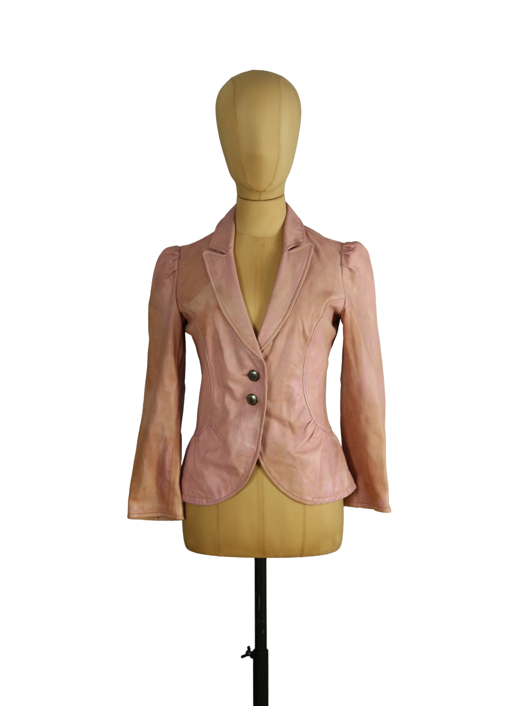

1 / 10Aus dem kuratierten Archiv von Disorder119. Diese tailliert geschnittene Lederjacke von Jean Paul Gaultier zeigt eine präzise, körpernahe Silhouette mit femininer Linienführung. Das weiche Leder in einem gedämpften Roséton besitzt eine leicht changierende Oberfläche, die dem Material Tiefe und Charakter verleiht. Die schmale Taille wird durch formgebende Nähte betont, während der leicht ausgestellte Saum im Rücken eine subtile Peplum-Wirkung erzeugt. Die Schulterpartie ist sanft akzentuiert, wodurch eine klare, strukturierte Linie entsteht. Klassische Revers und eine reduzierte Zweiknopfleiste ergänzen das Design und unterstreichen den ruhigen, eleganten Ausdruck. Die Ärmel verlaufen schlank und enden leicht ausgestellt, was die Gesamtform harmonisch abrundet. Details: Marke: Jean Paul Gaultier Farbe: Rosa Größe: XS Passform: Tailliert Verschluss: Knopfleiste Material: Leder Herstellungsland: Nicht angegeben Fotografie & Passform: Das Kleidungsstück wurde auf unserer Standard-Schneiderpuppe fotografiert, die wir zur konsistenten Darstellung aller Kleidungsstücke verwenden. Maße der Schneiderpuppe: Brustumfang 89 cm Taillenumfang 66 cm Hüftumfang 89 cm Schulterbreite 38 cm Zustand: Gebrauchter Zustand mit sichtbarer Patina und leichten Verfärbungen im Leder. Rechtliche Hinweise: Verkauf als gebrauchtes Kleidungsstück. Die Beschreibung erfolgt nach bestem Wissen und Gewissen. Farbnuancen und Oberflächenwirkungen können aufgrund von Lichtverhältnissen bei der Fotografie sowie unterschiedlicher Bildschirmdarstellungen leicht vom Original abweichen. Disorder119 steht für sorgfältig kuratierte Designerstücke mit Fokus auf Authentizität, Qualität und zeitlose Relevanz.
Disorder119 · Kuratiertes Archiv für Designer-, Vintage- und Contemporary-Mode. Jedes Stück wird einzeln ausgewählt, fotografiert und beschrieben.